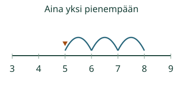
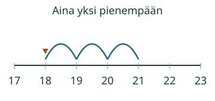

Loikka palaa numeropolkua.
Jatkan lukujonoa aina yhden pienempään lukuun.
Yksi taaksepäin
Valitse askel.
Reitti ja toisto
Paina yhtä askelta tai valitse toinen reitti. Saat kokeilla heti.
Lähtöpaikka ei ole askel
8 → 7 → 6 → 5. Kolme siirtoa vie luvusta 8 lukuun 5. Luku 8 on lähtöpaikka: ensimmäinen siirto päättyy lukuun 7.

Kymmenen kohdalla sääntö pysyy
21, 20, 19, 18. Myös 20:n jälkeen mennään yhtä pienempään: 19. 20 tai 19 ei jää välistä.

Mieti: lähtö on 3. Mitkä kolme lukua kohtaat yhden askelin taaksepäin?
Katso ajatus
2, 1 ja 0. Lähtölukua 3 ei lasketa siirroksi. Nollaan pysähdytään tässä harjoituksessa; negatiivisia lukuja ei tarvita.
Kokeile oma vastaus
Joka kerralla yksi vähemmän. Mitkä kaksi lukua tulevat 6:n jälkeen?
Apua
Katso annettua viimeistä lukua ja etsi sitä yhtä pienempi. Voit käyttää lukusuoraa tai kortteja. Lukujen nimet saa sanoa, mutta puhuminen ei ole vastaamisen ehto.
Tutki lisää
Kokeile lähtölukuja 12 ja 22 paperilla. Jatka aina yhden taaksepäin. Tämä on eri sääntö kuin kahden tai viiden askelin eteneminen.
Lopuksi: Loikka lähtee luvusta 10 ja tekee kaksi yhden siirtoa taaksepäin. Mihin se päätyy?
Opettajalle ja ilman ruutua
Lukusuoran yhden numerovälin pituus pysyy samana. Osoitin näyttää paikan; liike ei mittaa fyysistä hyppyä. Ei automaattista toistoa.
Luokat 1–2. Vaadittu esitieto on M-NUM-07. Numerot, askelsääntö ja mallin sanat annetaan tässä; ei uutta puhe-, esineiden nimeämis- tai laskutoimitusmerkkien porttia. Aikuinen voi lukea. Tuki ja malli ovat vapaaehtoisia.
Kirjoita peräkkäiset luvut korteille ja kuljeta merkkiä yhden kortin verran kohti pienempää. Aikuinen voi lukea luvut. Tarkkaile erikseen, lasketaanko lähtöpaikka virheellisesti askeleeksi.
Tuettu luvun kirjoittaminen tai mallin katsominen ei osoita suullista lukujonosujuvuutta, vähennyslaskun yleistä hallintaa, fyysistä liikkumista tai muistamista. Nimettyjen tehtävien luvut ovat 0–30; ei nollan alittavia siirtoja. Paikallinen harjoitus ei myönnä formaalia peli- tai prosessihallintaa, henkilökohtaista osaamismerkintää tai oppilaan itsenäisyysarviota. Ei tallennusta, aikarajaa tai vaikuttavuusväitettä.